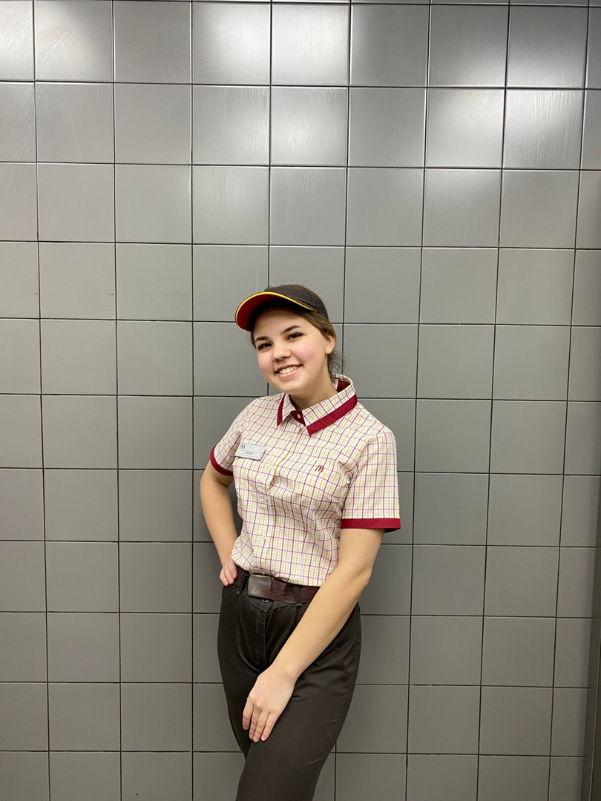
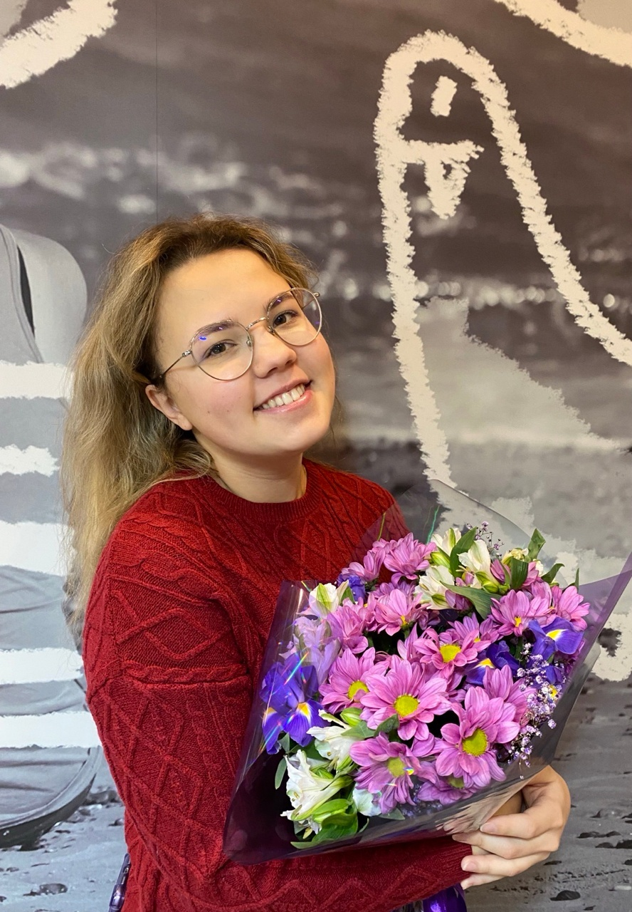
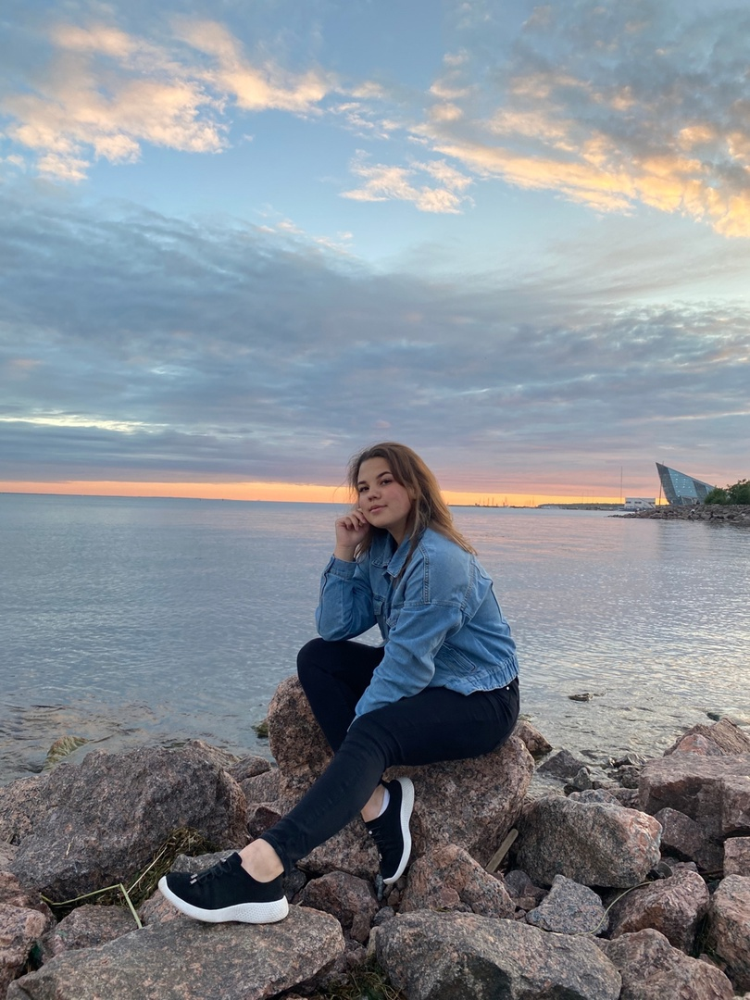
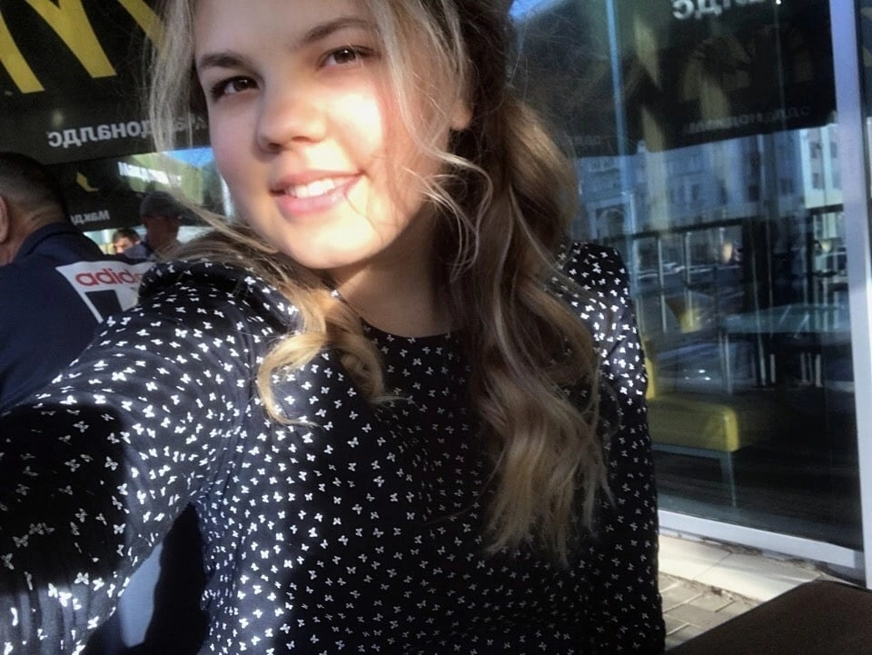

Карьера с нуля
В компанию первый раз я пришла в качестве сезонного работника в 2018 году. Отработав летний период, поняла что вернусь в компанию еще раз и уже точно не на сезон. Так оно и случилось.

- 14 августа 2019 года устроилась на должность Работник ПБО. Благодаря усердному желанию с 1 января 2021 года была повышена на должность Инструктор по обучению ПБО.
- За время работы в данной должности обучила большую часть пришедших в компанию сотрудников и зарекомендовала себя как ответственный и очень усердный инструктор, что было отмечено Директором ресторана.
- С 1 сентября 2021 была переведена на должность менеджера на обучении. Успешно его прошла и с 1 декабря 2021 года официально была повышена до менеджера ПБО.
- За усердие и желание изучать новое была обучена на старшего менеджера смены и в ночную смену. За кропотливость в работе и надёжность С 1 ноября 2022 года была переведена на должность ассистента директора ПБО.